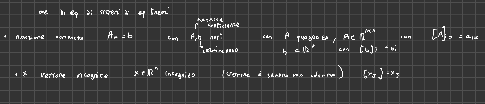
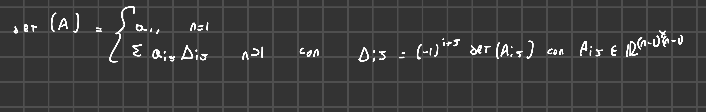
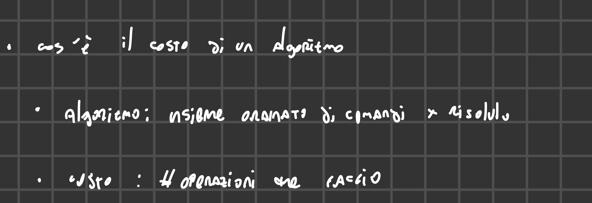
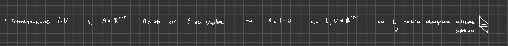
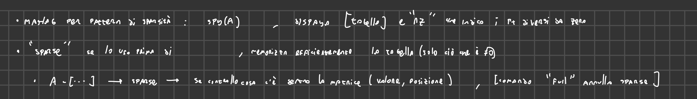
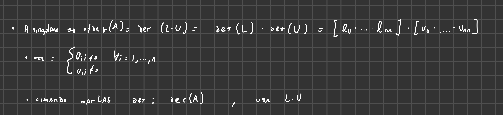
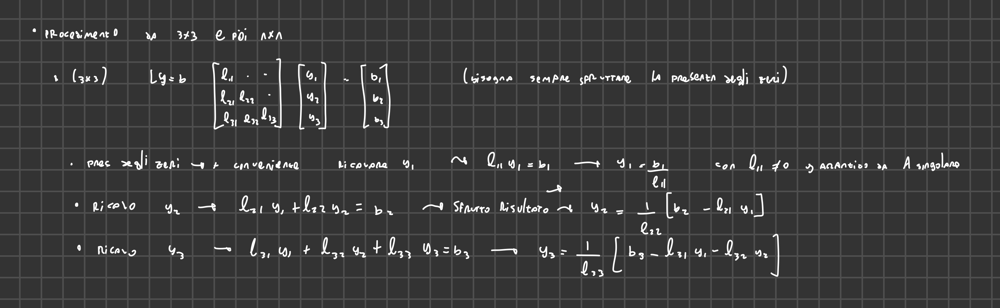
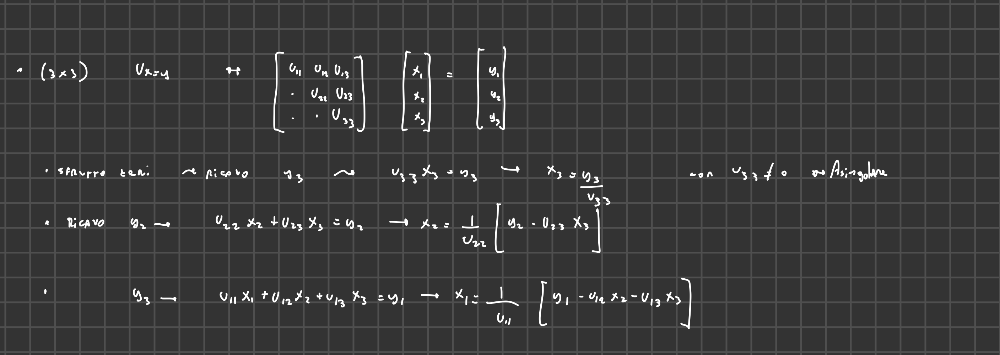

2025-02-18 10:17
Status: revisione_finita flashcard_finite riscritto_in_corso
Tags:matematica numerica sbobine
lez01-MateNum
Sistemi di Equazioni Lineari e Approssimazione
-
Notazione Compatta: Un sistema di equazioni lineari può essere espresso come Ax = b. Dove:
- A è la matrice dei coefficienti (n x n).
- x è il vettore delle incognite.
- b è il termine noto.
- 
-
Notazione per Componenti: La notazione compatta è equivalente a esprimere il sistema per componenti:
- a₁₁x₁ + a₁₂x₂ + … + a₁ₙxₙ = b₁
- a₂₁x₁ + a₂₂x₂ + … + a₂ₙxₙ = b₂
- …
- aₙ₁x₁ + aₙ₂x₂ + … + aₙₙxₙ = bₙ
-
Esistenza e Unicità della Soluzione: La condizione necessaria e sufficiente per garantire esistenza e unicità di x è che A sia non singolare (invertibile).
Regola di Cramer e Metodo di Laplace
-
Regola di Cramer: La componente i-esima del vettore delle incognite è calcolata come:
- xᵢ = det(Aᵢ) / det(A),
- dove Aᵢ è la matrice ottenuta sostituendo la colonna i-esima di A con il vettore b.
- dovremmo calcolare n+1 determinanti
-
Formula di Laplace: Usata per il calcolo del determinante:
- det(A) = Σⱼ aᵢⱼ * Δᵢⱼ,
- dove Δᵢⱼ è il complemento algebrico di aᵢⱼ, dato da (-1)ⁱ⁺ʲ * det(Aᵢⱼ), con Aᵢⱼ matrice di dimensione inferiore (n-1) ottenuta eliminando la riga i e la colonna j.
- 
-
Costo Computazionale: L’uso combinato di Cramer e Laplace porta a un costo computazionale di O(n!), rendendolo inadatto per sistemi di grandi dimensioni.
- Il professore sottolinea che questo costo è insostenibile.
-
Costo di un algoritmo
- 
Algoritmo di Strassen
- L’algoritmo di Strassen ha un costo computazionale di circa O(n^4).
- Anche se migliore di O(n!), è ancora inefficiente per sistemi di dimensioni elevate.
Metodi di Approssimazione: Diretti vs. Iterativi
- Metodi Diretti: Forniscono un’approssimazione della soluzione in un numero finito di passi.
- Metodi Iterativi: Generano una successione di approssimazioni che convergono alla soluzione.
- L’approssimazione della soluzione si ottiene come il limite di una successione di approssimazioni, partendo da una “black box” che genera approssimazioni successive, con la speranza che convergano alla soluzione esatta.
Fattorizzazione LU ( metodi diretti)
-
Definizione: La fattorizzazione LU decompone la matrice A nel prodotto di due matrici:
- A = L * U,
- dove L è una matrice triangolare inferiore e U è una matrice triangolare superiore.
- 
-
Matrice Triangolare Inferiore (L):
- Elementi non nulli nella parte triangolare inferiore e sulla diagonale.
- Formalmente: lᵢⱼ = 0 se i < j.
-
Matrice Triangolare Superiore (U):
- Elementi non nulli nella parte triangolare superiore e sulla diagonale.
- Formalmente: uᵢⱼ = 0 se i > j.
Risoluzione del Sistema con Fattorizzazione LU
- Sostituzione: Riscrivere il sistema originale Ax = b come LUx = b.
- Variabile Ausiliaria: Definire Ux = y, trasformando il sistema in Ly = b.
- Sistemi Triangolari:
- Risolvere Ly = b per trovare y (sistema triangolare inferiore).
- Risolvere Ux = y per trovare x (sistema triangolare superiore).
- Ordine di Risoluzione: È necessario risolvere prima Ly = b perché b è noto, mentre y è incognito.
Vantaggi della Fattorizzazione LU
- Efficienza: Risolvere due sistemi triangolari è più efficiente, soprattutto con matrici sparse.
- Matrici Sparse: Matrici con molti elementi nulli.
- Una matrice B (n x n) è sparsa se il numero di elementi diversi da zero è proporzionale a n, non a n².
- La sparsità rende più efficiente la risoluzione dei sistemi lineari.
- Pattern di Sparsità: La configurazione degli elementi non nulli influenza l’efficienza degli algoritmi.
- 
Calcolo del Determinante con LU
- 
- Proprietà: det(A) = det(L) * det(U).
- Calcolo Semplificato: Il determinante di una matrice triangolare è il prodotto degli elementi diagonali.
- Efficienza: Questo metodo è più efficiente rispetto a Laplace.
Algoritmo delle Sostituzioni in Avanti (Forward Substitution)
-
Obiettivo: Risolvere Ly = b, con L triangolare inferiore.
-
Procedimento:
- 
-
Inizializzazione: Calcolare y₁ = b₁ / l₁₁.
-
Iterazione: Per i = 2, …, n, calcolare:
- yᵢ = (bᵢ - Σⱼ lᵢⱼ * yⱼ) / lᵢᵢ, con j che va da 1 a i-1.
-
Costo Computazionale: O(n²).
- Divisioni: n divisioni.
- Moltiplicazioni: Σᵢ(i - 1) = n(n - 1) / 2.
- Sottrazioni: Σᵢ(i - 1) = n(n - 1) / 2.
- Totale: n + n(n - 1) = n².
Algoritmo delle Sostituzioni all’Indietro (Backward Substitution)
-
Obiettivo: Risolvere Ux = y, con U triangolare superiore.
-
Procedimento:
- 
-
Inizializzazione: Calcolare xₙ = yₙ / uₙₙ.
-
Iterazione: Per i = n-1, …, 1, calcolare:
- xᵢ = (yᵢ - Σₖ uᵢₖ * xₖ) / uᵢᵢ, con k che va da i+1 a n.
-
Costo Computazionale: O(n²). La struttura è analoga a quella dell’algoritmo in avanti.
Calcolo dei Fattori LU e la Scelta di lᵢᵢ = 1
- Sistema Sottodeterminato: Nel calcolo diretto dei fattori LU, il sistema ha più incognite che equazioni.
- Soluzione: Si impone che gli elementi diagonali di L siano uguali a 1 (lᵢᵢ = 1).
- Motivazione: Questa scelta riduce le incognite, rendendo il sistema determinato e risolvibile.
Passaggi Matematici per il Caso 2x2 (Fattorizzazione LU)
-
- 4 equazioni e 6 incognite, è un problema, soluzione? rendere la diagonale di L a 1
\begin{bmatrix} 1 & 0 \ l_{21} & 1 \ \ \end{bmatrix} \ \begin{bmatrix} U_{11} & U_{12} \ 0 & U_{22} \end{bmatrix}$$
Generalizzazione e Costo Computazionale
- Matrice nxn: Per una matrice nxn, ci sono n² equazioni.
- Numero di Incognite: Ci sono elementi in L e altrettanti in U, per un totale di n²+n incognite.
- Imposizione di lᵢᵢ = 1: Fissare gli elementi diagonali di L a 1 riduce il numero di incognite a n².
References